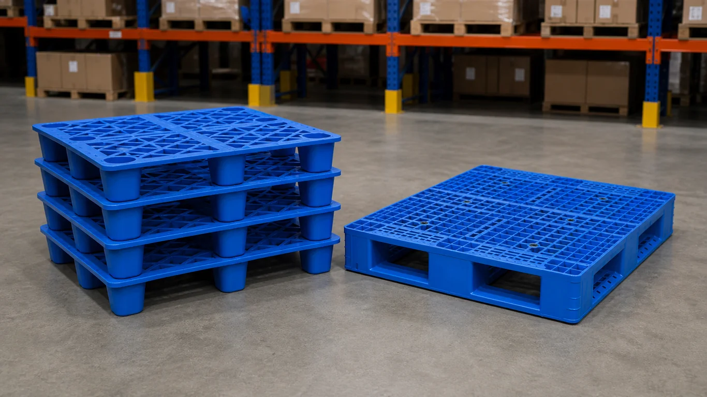
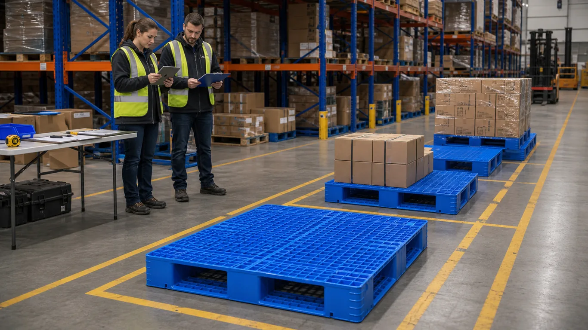
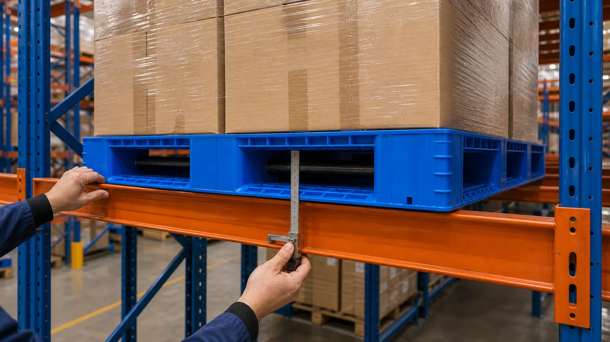
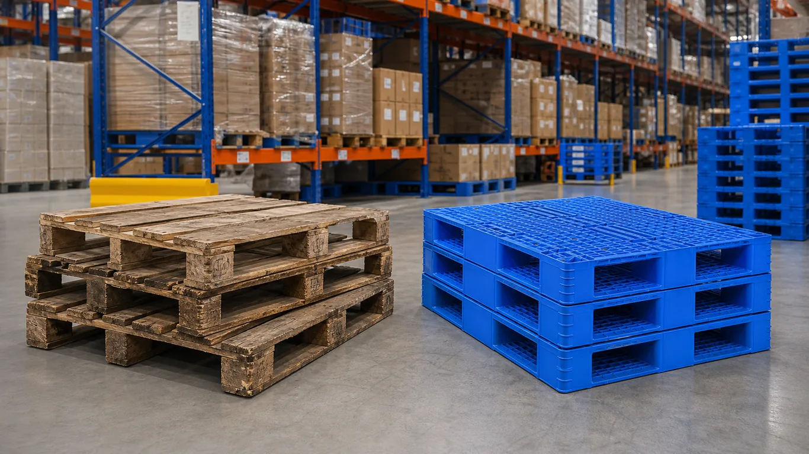
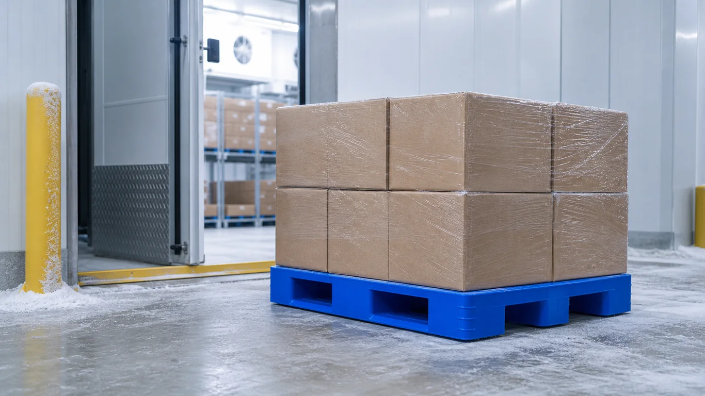
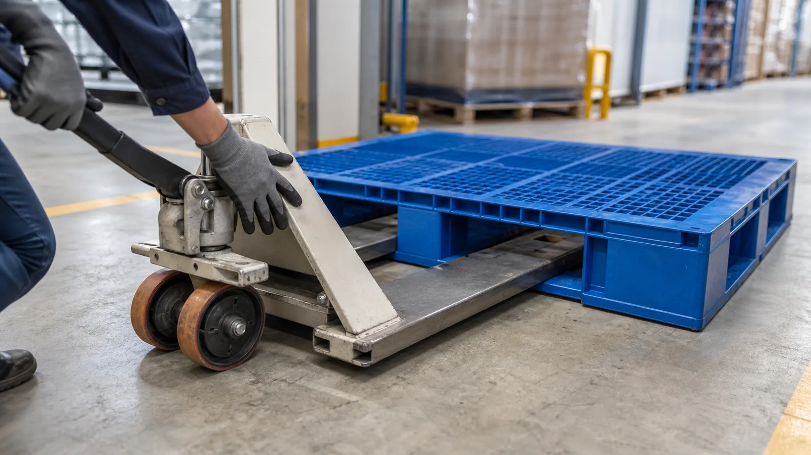

Nestable vs Rackable Plastic Pallets: How Buyers Should Split the Decision
Use load support, rack exposure, empty-return cost, and handling intensity to decide when nestable or rackable plastic pallets fit your lane.
Read guide →Factory-direct industrial handling products
English 中文 Español Français
RESOURCES / 01 Project knowledge
Buying guides and project knowledge for plastic pallets, pallet boxes, crates, containers, and warehouse logistics.
01 Resource sections
Specification checklists, product comparisons, and warehouse operating guides.
Browse guides → CONTENT REQUIREDNo verified case-study detail pages exist yet.
Do not expose empty in production CONTENT REQUIREDAnswers to the most common questions about plastic pallet performance, customization, and logistics.
Do not expose empty in production02 Buying guides
The RFQ Checklist is not promoted as a navigation destination. Other real guides remain discoverable at their existing URLs.

Use load support, rack exposure, empty-return cost, and handling intensity to decide when nestable or rackable plastic pallets fit your lane.
Read guide →
A 90-day pilot framework to validate plastic pallet ROI, racking safety, and operational fit before replacing wooden pallets across your warehouse network.
Read guide →
An extension of our wooden-to-plastic pallet upgrade guide, focused on one critical topic: how to evaluate steel reinforcement for racking safety.
Read guide →
Decide when replacing wooden pallets with plastic pallets is justified, what conditions to verify, and what RFQ data to send before a warehouse upgrade.
Read guide →
A procurement and operations guide to selecting plastic pallets for freezer environments, with material checks, impact-risk controls, and implementation standards for cold-chain warehouses.
Read guide →
A practical guide for warehouse and procurement teams on checking whether plastic pallets work safely with manual pallet jacks, electric pallet trucks, and real loaded handling routes.
Read guide →